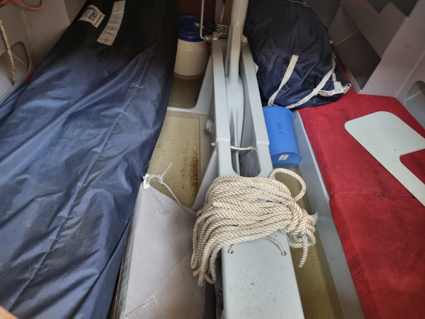
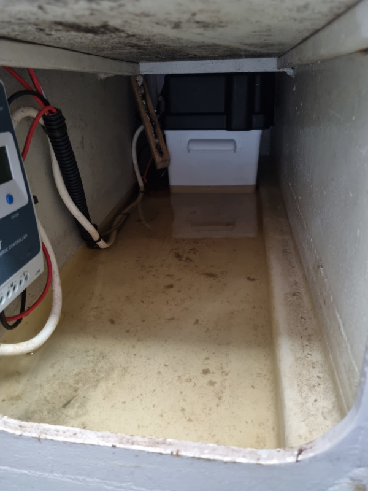
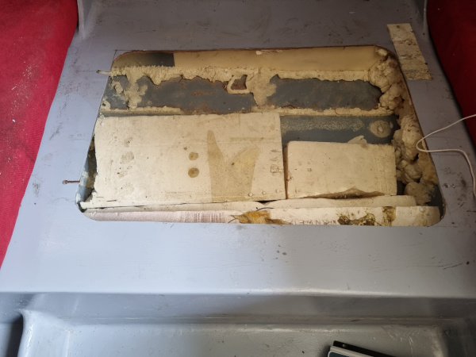
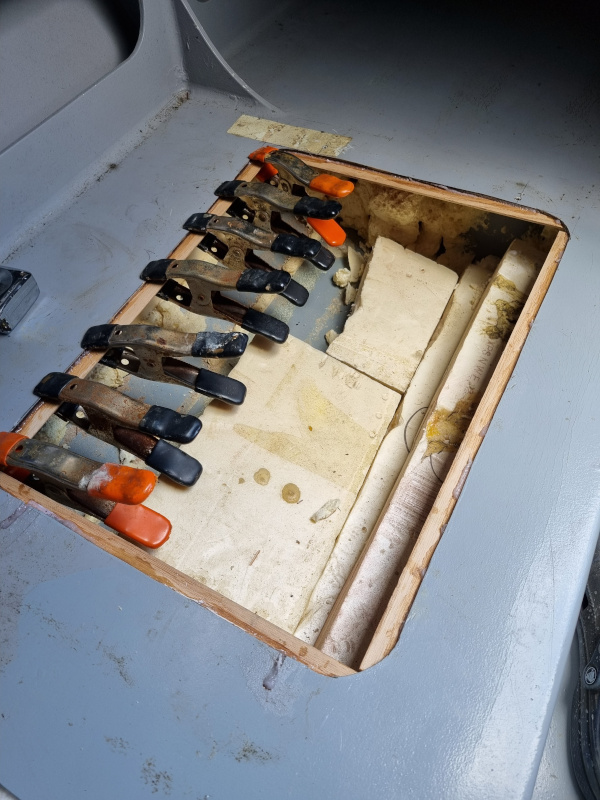
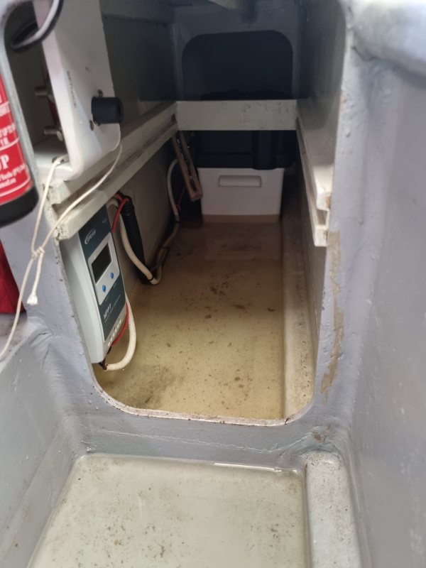

<div class="boat-card">
    <div style="min-height: 400px; overflow-y: auto;">
        <div class="tab" style="margin-top: 30px; margin-bottom: 10px; display: grid; grid-template-columns: auto auto auto auto auto auto auto auto auto auto auto;"> <!-- TODO Improve the grid-template... -->
            <button class="tablinks tab-active" onclick="openTab(event, 'zephir-01');" title="Summary">Summary</button>
            <button class="tablinks" onclick="openTab(event, 'zephir-02');" title="Details">Details</button>
            <button class="tablinks" onclick="openTab(event, 'zephir-03');" title="News">News</button>
        </div>
    
        <div style="min-height: 300px; max-height: 450px; overflow-y: auto;">
            <div id="zephir-01" class="tab-section" style="display: block;">
                <div style="display: grid; grid-template-columns: 50% 50%;">
                    
                    <div style="padding: 14px;">
                        <h2>Zephir</h2>
                        Birvidic 700 based in Kernevel<br/>
                    </div>
                </div>
                <div>
                    <h2>More info...</h2>
                    Referent: Olivier.<br/>
                    <!--
                    T&eacute;l : . . .<br/>
                    Email : . . . -->
                </div>
            </div>
            <div id="zephir-02" class="tab-section" style="display: none;">
                <div style="display: grid;">    
                    <p style="line-height: 1.2em; margin-top: 10px;">
                        Zephir is a <a href="https://www.fr-lucas.com/birvidic-700-1701" target="FL">Birvidic 700</a>, designed by Fran&ccedil;ois Lucas.
                    </p>
                </div>
            </div>
            <div id="zephir-03" class="tab-section" style="display: none; line-height: 1.0em;">
                <h2>Back in business</h2>
                <span>After a couple of months on its trailer, Zephir is back in business</span>
                <br/>
                <p style="text-align: left; margin-top: 10px;">
                    
                    <br/>
                    
                    <br/>
                    After those months outside on the yard, and the companion way hatch, not 100% waterproof, 
                    there is some water inside the boat...<br/>
                    In any case, there is no leak in the hull!<br/>
                    
                    <br/>
                </p>
                <h2>Upgrade of the buoyancy boxes</h2>
                <span>Wierd modifications must have been done...</span>
                <p style="text-align: left; margin-top: 10px;">
                    
                    <br/>
                    
                    <br/>
                    
                    <br/>
                    
                    <br/>
                </p>
                <h2>Regulator out of the water</h2>
                <span>
                    The regulator was at the battery level, connections were in thne water,
                    the battery was dead.
                </span>
                <p style="text-align: left; margin-top: 10px;">
                    
                    <br/>
                    
                    <br/>
                    Moved on the berth side, no more problem, connections are out of the water.
                </p>

                <h2><a href="https://olivierld.github.io/web.stuff/boat.stuff/rubiscup.2024/rubiscup.2024.html" target="OlivierLD">Zephir goes to the Rubi's Cup</a> &agrave; Groix (28-30 juin 2024)</h2>
                <p>
                    Back from the Rubi's Cup, Zephir now has a dock in Kern&eacute;vel, <b>K88</b>.
                </p>
            </div>
        </div>
    </div>
</div>
